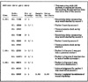
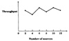
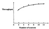

| Previous | Table of Contents | Next |
Structured walk-through consists of explaining the code to another person or a group. The code developer explains what each line of code does, which can be very helpful. It turns out that even if the listeners do not understand the model, the developers discover bugs simply by reading the code carefully, trying to explain it, and finding that the code does not exactly match the expectation.
The key problem in debugging simulation models is the randomness of variables. It is obvious that a deterministic program is easier to debug than a program with random variables. A common verification technique, therefore, is to allow the user to specify any distribution. Of course, the default parameter values should be set to represent the behavior in the real systems. But by specifying constant (deterministic) distributions, the user can easily determine output variables and thus debug the modules.
The model may be run with simple cases, for example, only one packet, or only one source, or only one intermediate node. These cases can be easily analyzed and the simulation results can be compared with the analysis. Of course, a model that works for simple cases is not guaranteed to work for more complex cases. Therefore, the test cases should be as complex as can be easily analyzed without simulation.
A trace consists of a time-ordered list of events and their associated variables. They may be presented at several levels of detail: events trace, procedure trace, or variables trace. The trace outputs are useful in debugging the model. Tracing causes additional processing overhead, and therefore, the model should have switches that allow the traces to be turned on and off.
A sample event trace for the computer network simulation is shown in Figure 25.3. The trace lists the time, event code, and various packet characteristics associated with the event. In the trace Si, Di, and Ri’s are the ith source, ith destination, and ith intermediate node (router), respectively.
It is possible to have much more detail in a trace than exhibited in the sample trace of Figure 25.3. For example, the trace could show events and procedure names as well as values of the key variables. Each procedure’s name could be printed as it is executed. The list is sometimes indented to indicate the call/return sequence. The trace statements explicitly put in the procedures print values of the key variables. The user should be able to select the level of detail in the trace, including no trace at all, which should be the default. The user may be allowed to trace only some selected events such as those belonging to a particular node in a computer network or a particular type of packet and so forth.

FIGURE 25.3 Sample packet event-trace output from the simulation model.
Simulations take a long time to run. On-line graphic displays and traces help to keep the user informed of the status of the simulation. They also make the simulation interesting and are helpful in selling the simulation results to others. Most of all, the displays help debug the simulation; they can present the same information as in the trace but in a more comprehensive form. It is difficult to look at a long trace, while it is easy to inspect the display for the same period.
Continuity tests consist of running the simulation several times for slightly different values of input parameters. For any one parameter, a slight change in input should generally produce only a slight change in the output. Any sudden changes in the output should be investigated. Often, they are due to modeling error.
An example of a continuity test is shown in Figure 25.4, which shows the response time for various values of an input parameter using an undebugged version of the simulation model. The output jumps caused us to carefully trace the code. The same graph from the verified version of the model is shown in Figure 25.5. Notice that the response time curve is now smooth.

FIGURE 25.4 Discontinuities in the curve indicate the possibility of a programming error.

FIGURE 25.5 The curve after verification.
Degeneracy tests consist of checking that the model works for extreme (lowest or highest allowed) values of system, configuration, or workload parameters. For example, a multi-CPU, multidisk workstation model should work for a single CPU without a disk (diskless) as long as these are valid system configurations. Although these extreme cases may not represent a typical case, they help discover bugs that the analyst would not have thought of otherwise. It is useful to incorporate checks for input parameter values and to verify that they are within the allowed bounds. The analyst should have verified that the model works for any combination of these allowed bounds.
For example, the network simulation model works for a system with no sources, no routers, routers with zero service times, or sources with infinite flow control windows.
These tests consist of checking that the model produces similar results for input parameter values that have similar effects. For example, two sources with an arrival rate of 100 packets per second should load the network to approximately the same level as four sources with an arrival rate of 50 packets per second each. If the model output shows a significant difference, either the difference should be explainable or it could be due to programming errors.
The test cases used in continuity, degeneracy, and consistency tests should be saved in a test library so that whenever the model is changed, the tests can be repeated to verify the new model.
The seeds used in random-number generation should not affect the final conclusion. Thus, the model should produce similar results for different seed values. The analyst should verify this by running the simulation with different seed values.
Validation refers to ensuring that the assumptions used in developing the model are reasonable in that, if correctly implemented, the model would produce results close to that observed in real systems. The validation techniques depend upon the assumptions and, hence, on the systems being modeled. Thus, unlike verification techniques that are generally applicable, the validation techniques used in one simulation may not apply to another.
Model validation consists of validating the three key aspects of the model:
Each of these three aspects may be subjected to a validity test by comparing it with that obtained from the following three possible sources:
| Previous | Table of Contents | Next |
){kind=link}
){kind=link}
){kind=link}
){kind=link}
){kind=link}
){kind=link}